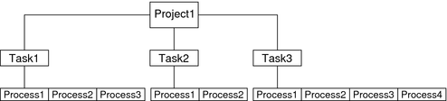

|
|||
|
1. Resource Management in the Solaris Operating System Project and Task API Functions Code Examples for Accessing project Database Entries Programming Issues Associated With Projects and Tasks 3. Using the C Interface to Extended Accounting 4. Using the Perl Interface to Extended Accounting 7. Design Considerations for Resource Management Applications in Solaris Zones |
Overview of Projects and TasksThe Solaris Operating System uses the workload hierarchy to organize the work being performed on the system. A task is a collection of processes that represents a workload component. A project is a collection of tasks that represents an entire workload. At any given time, a process can be a component of only one task and one project. The relationships in the workload hierarchy are illustrated in the following figure. Figure 2-1 Workload HierarchyA user who is a member of more than one project can run processes in multiple projects at the same time. All processes that are started by a process inherit the project and task created by the parent process. When you switch to a new project in a startup script, all child processes run in the new project. An executing user process has an associated user identity (uid), group identity (gid), and project identity (projid). Process attributes and abilities are inherited from the user, group, and project identities to form the execution context for a task. For an in-depth discussion of projects and tasks, see Chapter 2, Projects and Tasks (Overview), in System Administration Guide: Solaris Containers-Resource Management and Solaris Zones. For the administration commands for managing projects and tasks, see Chapter 3, Administering Projects and Tasks, in System Administration Guide: Solaris Containers-Resource Management and Solaris Zones. /etc/project FileThe project file is the heart of workload hierarchy. The project database is maintained on a system through the /etc/project file or over the network through a naming service, such as NIS or LDAP. The /etc/project file contains five standard projects.
To access the project file programmatically, use the following structure: struct project {
char *pj_name; /* name of the project */
projid_t pj_projid; /* numerical project ID */
char *pj_comment; /* project comment */
char **pj_users; /* vector of pointers to project user names */
char **pj_groups; /* vector of pointers to project group names */
char *pj_attr; /* project attributes */
};The project structure members include the following:
Resource usage can be controlled through project attributes, or, for zones, configured through the zonecfg command. Four prefixes are used to group the types of resource control attributes:
For the complete list of resource controls, see resource_controls(5). |
||
|